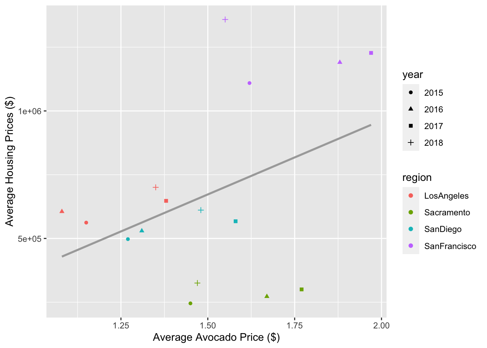
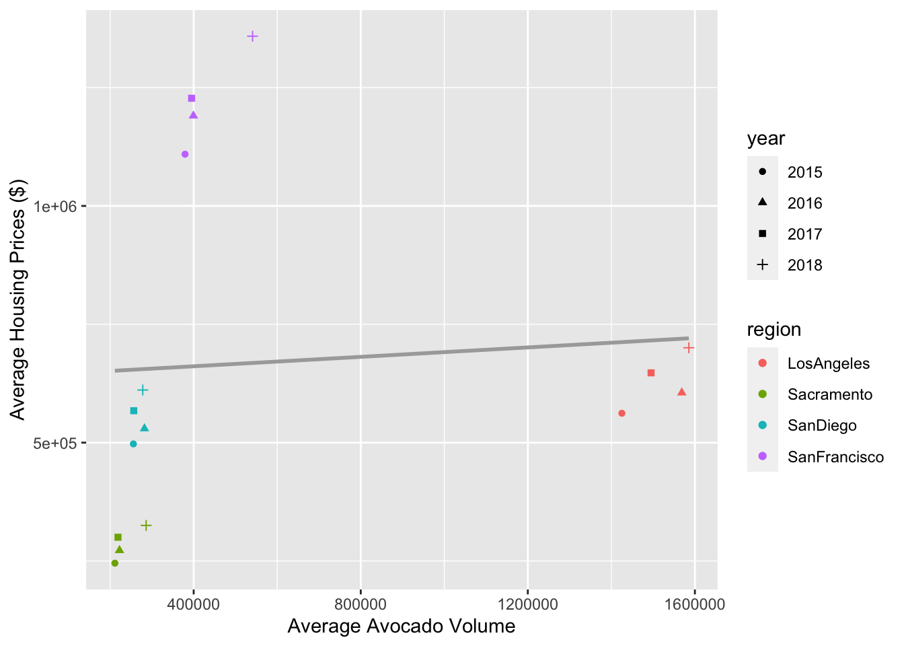

Code
library(tidyverse)
library(here)
library(moderndive)
library(forcats)library(tidyverse)
library(here)
library(moderndive)
library(forcats)# Code for question 1!
avocado <- read_csv(here::here("supporting_artifacts",
"extended_learning",
"Challenge 4",
"avocado.csv"))avocado |>
distinct(region, keep_all = TRUE)# A tibble: 54 × 2
region keep_all
<chr> <lgl>
1 Albany TRUE
2 Atlanta TRUE
3 BaltimoreWashington TRUE
4 Boise TRUE
5 Boston TRUE
6 BuffaloRochester TRUE
7 California TRUE
8 Charlotte TRUE
9 Chicago TRUE
10 CincinnatiDayton TRUE
# … with 44 more rowsavocado_clean <- avocado|>
rename(total_volume = `Total Volume`,
total_bags = `Total Bags`,
large_HASS = '4225',
small_HASS = '4046',
xl_HASS = '4770')avocado_region <- data.frame(region = c('GreatLakes',
'Midsouth',
'Northeast',
'NorthernNewEngland',
'SouthCentral',
'Southeast',
'West',
'WestTexNewMexico'))
avocado_total <- data.frame(region = c('TotalUS'))
avocado_state <- data.frame(region = c('California'))
avocado_city <- avocado_clean |>
anti_join(avocado_region, by = "region") |>
anti_join(avocado_state, by = "region") |>
anti_join(avocado_total, by = "region")CA_cities <- data.frame(region = c('LosAngeles', 'SanDiego', 'Sacramento', 'SanFrancisco'))
avocado_CA <- avocado_clean |>
semi_join(CA_cities, by = "region") CA_housing_prices <-
data.frame(region = c("LosAngeles","LosAngeles", "LosAngeles", "LosAngeles",
"Sacramento","Sacramento","Sacramento","Sacramento",
"SanDiego", "SanDiego", "SanDiego","SanDiego",
"SanFrancisco","SanFrancisco","SanFrancisco","SanFrancisco"),
average_annual_price = c(562072.833, 605461.75, 647423.916, 700454.67, #LA
245447.83, 272402.25, 300190.67,325170.67, #SAC
497316.166, 529688.25,567404.75,611114.33, #SD
1109257.17, 1190377.17, 1227453.08, 1358550.58), #SF
year = c("2015","2016","2017","2018",
"2015", "2016", "2017","2018",
"2015", "2016", "2017","2018",
"2015", "2016", "2017","2018")
) |>
mutate(year = as.numeric(year))joined_dataset <- avocado_CA |>
left_join(CA_housing_prices, by = c("region" = "region", "year" = "year")) |>
select(region, year, average_annual_price, AveragePrice, total_volume) |>
group_by(region, year) |>
summarize(average_avocado_prices = round(mean(AveragePrice), 2),
average_avocado_volume = mean(total_volume),
average_house_prices = mean(average_annual_price))joined_dataset |>
#by house and avocado prices
mutate(year = as.factor(year)) |>
ggplot(mapping = aes(average_avocado_prices,
average_house_prices)) +
geom_point(aes(color = region,
shape = year)) +
labs(x = "Average Avocado Price ($)",
y = "Average Housing Prices ($)") +
geom_smooth(method = 'lm', se = FALSE, color = 'darkgray')
#by volume and house prices
joined_dataset |>
mutate(year = as.factor(year)) |>
ggplot(mapping = aes(average_avocado_volume,
average_house_prices)) +
geom_point(aes(color = region,
shape = year)) +
labs(x = "Average Avocado Volume",
y = "Average Housing Prices ($)") +
geom_smooth(method = 'lm', se = FALSE, color = 'darkgray')
price_housing_cor <- ungroup(joined_dataset)|>
get_correlation(formula = average_house_prices ~ average_avocado_prices)
volume_housing_cor <- ungroup(joined_dataset)|>
get_correlation(formula = average_house_prices ~ average_avocado_volume)
# Resource: http://www.sthda.com/english/wiki/ggplot2-scatter-plots-quick-start-guide-r-software-and-data-visualization
# https://rdrr.io/cran/moderndive/man/get_correlation.htmlBased on my two plots, I believe that there is not a relationship between house prices and avocado prices/sales.
From the first plot, which is a scatterplot measuring the average avocado prices and average house prices in the 4 regions of California (Los Angeles, Sacramento, San Diego, San Francisco) over the years of 2015 to 2018, we can see that there is distance from the points and the line of best fit. After calculating the correlation which is 0.401, we see that there is not a strong relationship between average avocado prices and average house prices.
From the second plot, which is a scatterplot measuring the average avocado sales and average house prices in the 4 regions of California (Los Angeles, Sacramento, San Diego, San Francisco) over the years of 2015 to 2018, we can see that there is a larger distance from the points and the line of best fit. After calculating the correlation which is 0.0761 we see that there is a very weak relationship between average avocado prices and average house prices.
From these two plots we see that spending money on avocados does not relate to millennials not being able afford houses.